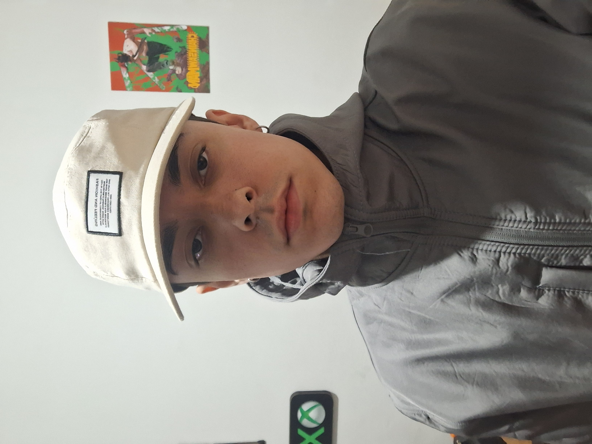

Irineu Cassiano Neto
Amante de tecnologia e suas pecluiaridades, foco meus estudos principalmente em Segurança da Informação e Redes de Computadores
Amante de tecnologia e suas pecluiaridades, foco meus estudos principalmente em Segurança da Informação e Redes de Computadores